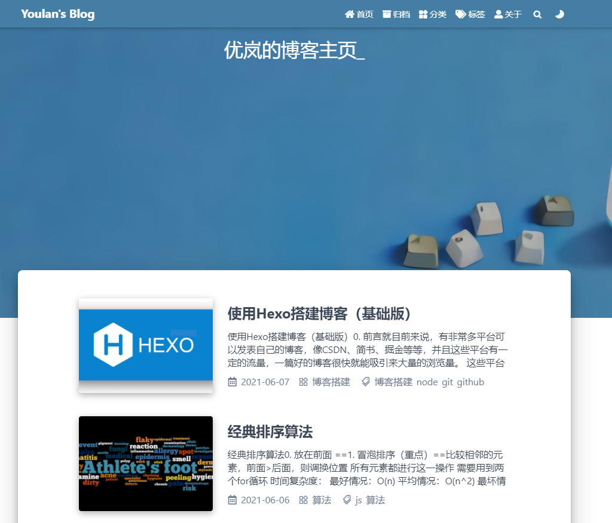

Hexo Fluid主题配置
Hexo Fluid 主题配置
0. 前言
Hexo 搭建好的博客是使用landscape主题，看起来挺丑的…不是很喜欢，所以我们到 hexo 官网上寻找一些好看的主题进行更改。
hexo 主题网站： https://hexo.io/themes/
这里有几百个主题供你选择，由于太多而且网站中也没有对这些主题进行筛选的功能，让人难以选择，所以我们推荐到 github 上寻找合适的主题：

从而可以看出，最受欢迎的是Next主题，还有几个主题的 star 数也不少，大家根据自己的喜好挑选即可。
浅谈几个挑选合适主题的标准：
- star 数、fork 数多的
- 使用文档写的比较详细的
- 更新时间比较近的，或者更新频率比较高的
1. Fluid 主题介绍
这是一款 Material Design 风格的 Hexo 主题，以简约的设计帮助你专注于写作

整体上，简约风，个人是比较喜爱的。最重要的是这个主题的文档写得非常地详细，查起来非常容易，上手快。
2. 安装
安装的话，github的README.md文档写的很清楚了
这里直接复制粘贴一下：
方式一：
1 | |
然后在博客目录下创建 _config.fluid.yml，将主题的 _config.yml内容复制进去。
方式二：
1 | |
或者直接下载压缩文件，解压后放到/themes目录，将解压出来的文件夹命名为/fluid
3. 修改配置
修改 Hexo 博客目录中的 _config.yml：
1 | |
4. 创建页
首次使用主题的「关于页」需要手动创建：
1 | |
创建成功后，编辑博客目录下 /source/about/index.md，添加 layout 属性。
修改后的文件示例如下：
1 | |
分类页、标签类也类似
创建了这两个页，在写文章的时候，在最前面写上对应的 category、tags 即可
例如：
1 | |
具体的参数可以查阅官方文档： https://hexo.io/zh-cn/docs/front-matter
5. 编写文章的使用心得
1. 通过命令创建新的 md 文档
你可以执行下列命令来创建一篇新文章或者新的页面。
1 | |
文章的布局（layout）是文章所属的类型，默认为 post，可以通过修改 _config.yml 中的 default_layout 参数来指定默认布局。
文档目录如下：
1 | |
接下来， 把已编辑好的文件复制到该文件中，清除并重新生成，在本地查看格式和内容。
1 | |
2. 静态图片渲染问题
官方使用hexo-render-marked渲染插件配合post_asset_folder。
开启了post_asset_folder以后每次hexo new 'blogtitle'的时候，就会在source/_post/里面生成blogtilte.md和/blogtitle/的文件夹。所以在根目录下的_config.yml中配置：
1 | |
但是，渲染之后还是找不到图片。因为在marked配置中将图片渲染为绝对路径 => (‘/blogtitle/imagetitle.png’)。而 hexo 渲染文章时，会生成日期对应的文件夹，相对于根目录public，完整路径是（‘/01/5/blogtitle/imagetitle.png’），所以按绝对路径找不到。
解决办法：修改渲染
renderer.js
在渲染插件hexo-render-marked中的 lib/renderer.js 中第 135 行添加以下内容，转换为相对路径：
1 | |
3. fluid 主题开启评论
在配置文件_config.fluid.yaml中的文章页（Post Page）部分开启并配置：
1 | |
然后在下方评论插件（Comment plugins）部分设置对应评论模块的参数，比如valine对应设置：
1 | |
当前支持的评论插件如下：
- Valine:基于 LeanCloud
- Waline: 从 Valine 衍生而来，额外增加了服务端和多种功能
- Gitalk: 基于 GitHub Issues
- Utterances: 基于 GitHub Issues
- Disqus: 基于第三方的服务
- 畅言: 基于第三方的服务
- 来必力(Livere): 基于第三方的服务
- Remark42: 需要自托管服务端
- Twikoo: 基于腾讯云开发
- Cusdis: 基于第三方服务或自托管服务
- Giscus: 基于 GitHub Discussion
使用方式和参数设置请点击上面链接查看各自的文档。
若想自己添加新的评论插件，可通过自定义功能加入 <script>，并判断是否存在 #comments 元素进行挂载。
TIP：
国内用户推荐使用 Valine、Waline 或者 twikoo
如果设置后评论模块没有显示，说明配置没有完成，或者配置有误出现报错（请在浏览器控制台查看具体报错）
如果想在某个文章页关闭评论，或者想在某个自定义页面开启评论，可以通过在 Front-matter 设置 comment: bool 来控制评论开关，或者通过 comment: 'type' 来开启指定的评论插件。
例如，在关于页开启并指定评论插件：
1 | |
6. _config.yml
这里的注释是英文的，可能看起来不是那么方便，这里主要是两个地方需要修改，其他直接默认就可以了
- 最开头的网站信息
- 以及最末尾的部署设置
这里可以配置二次元人物，具体就到网上搜索就好了~ 搜live2 看板娘
7. 最后
算是一个傻瓜式教程了。。。。省略了非常多的步骤。next 听说可玩度很高，配置之后网页非常好看（但我不喜欢又关我什么事 hhh），next 的贡献者非常多，所以 next 主题的维护以及更新等等方面都非常地强。
但是！fluid 的简约风真的非常 nice！！！安利一波
8. 小彩蛋
对了，在设置 banner_img 的时候，由于 banner 比较大，所以把图片放大之后非常地模糊。。。所以这个也让我浪费了非常多时间在找高清图以及增强图片清晰度的方法
- 增强图片清晰度的方法：
- 用 ps：emmm…难度有点大，ps 小白表示不想
- 一些 ai 图像修复网站：傻瓜式操作，还不错
- 一些高清图片的网站
这个是我后来在 fluid 的博客上看到的…应该早点看到，泪目